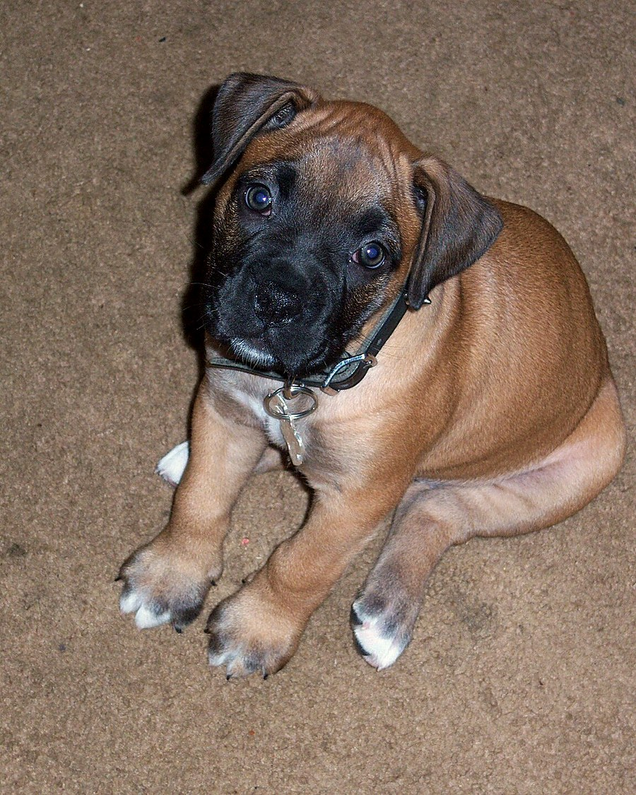
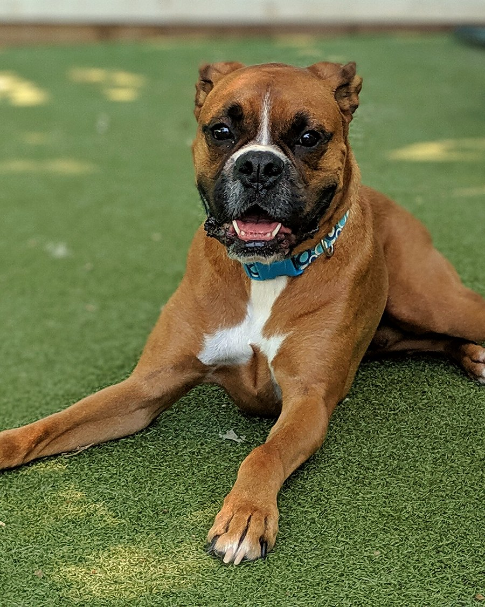
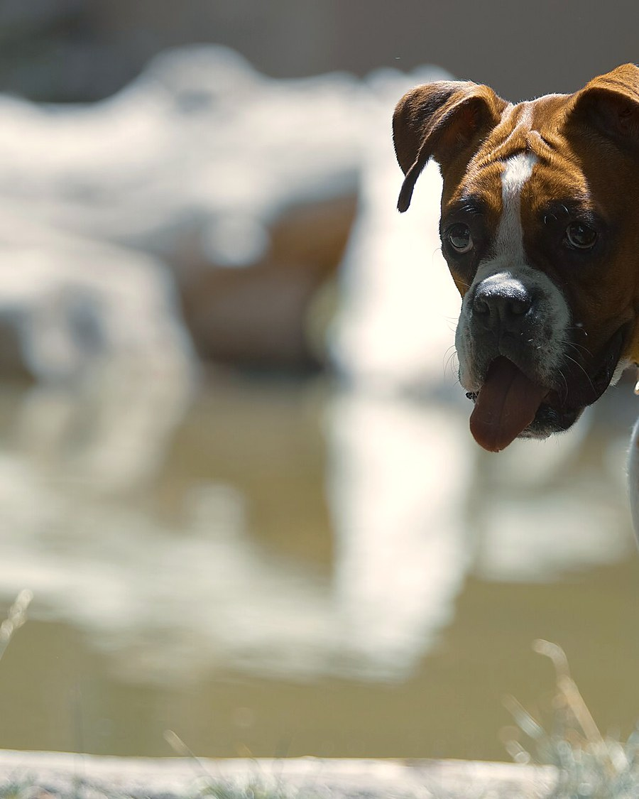

Bringing home
a Paradigm puppy.
What our contract covers, how we temperament test, how we feed, and our guardian home program for families who want to raise a future breeding dog.

What every puppy family signs.
Every Paradigm puppy leaves with a written agreement. The short version:
- 3-year congenital health guarantee (heart conditions, hip/elbow dysplasia)
- Mandatory vet check within 48 hours of going home
- Puppy is CKC registered — full paperwork provided at pickup
- Registration transfers into your name once proof of spay (by 8 months) or neuter (by 14 months) is provided
- Indoor housing, leash control, and a securely fenced yard
- If it ever doesn't work out, the dog comes back directly to us — never to a shelter or rescue, at no cost to us or to you
How we temperament test
Why 49 days, specifically — and not sooner.
A puppy's eyes aren't even open at one week old, so there's no real temperament to read yet. Personality starts to emerge around 4 weeks, but it isn't reliable until the puppy is neurologically complete — which happens at 49 days old, when their brain function matches an adult dog's.
We test every puppy at exactly 49 days, using a version of the Volhard Puppy Aptitude Test (PAT). Wait much longer and the results start reflecting what the puppy has learned rather than who it naturally is — so 49 days is the sweet spot, not an arbitrary number.
"Neurologically complete" means a 49-day-old puppy's brain responds like an adult dog's — every day after that, prior learning starts to color the results.

Why we feed raw — and how to transition.
[Placeholder — replace with your real raw feeding philosophy and sourcing.] Our puppies are started on a raw diet early, and we send every family home with a transition guide, portioning chart, and a list of suppliers we trust here in Alberta.
Not planning to feed raw? That's completely fine — we'll walk you through a quality kibble transition instead.
Raw Feeding Guide (PDF) →Guardian Home Program
Placeholder program details — a way to keep our breeding dogs in loving homes without keeping a large kennel ourselves.
[Placeholder — replace with your real guardian program terms.] A guardian home means one of our breeding dogs lives full-time with your family — as a loved pet — while remaining part of our program for a set number of litters or seasons. We cover health testing and breeding-related veterinary costs; you provide the home, the walks, and the couch space.
A purebred dog, reduced cost
Placeholder — outline your reduced adoption fee or cost structure here.
A healthy, well-loved dog
Placeholder — outline expectations: fencing, time commitment, breeding visits, etc.

Common questions
How much is a puppy?
$3,000 CAD, including GST. Deposit of $[placeholder] holds your spot on the list. If you're outside the Calgary area and need your puppy flown to you, the cost of the flight and an airline-approved travel crate is added on top.
Do you ship puppies?
Yes — we can fly puppies to their new families. You cover the flight and travel crate cost; we handle the arrangements. Local pickup near Okotoks/Calgary is always an option too.
Are your dogs registered?
Yes — every puppy is CKC registered and you'll receive full paperwork at pickup. Per our contract, the CKC registration papers transfer into your name once we receive proof your puppy has been spayed or neutered.
What if it doesn't work out?
The dog comes back directly to us — always, no exceptions, at no cost to either of us. There's never a reason for one of our puppies to end up in a shelter or rescue.
When can my puppy go outside in the dog run?
Not until they're about 6 months old. Before that, they're raised indoors as part of the household — the run comes later, once they're big enough to enjoy it safely.